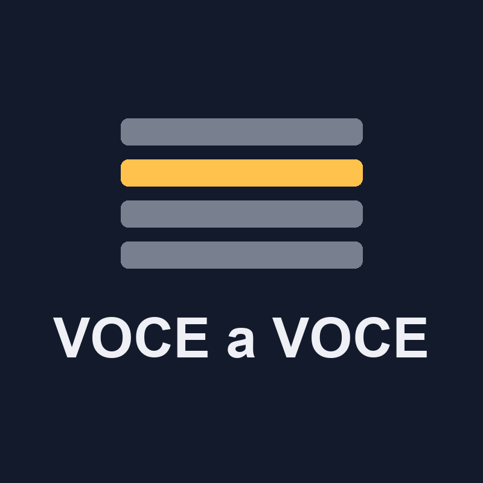

VOCE a VOCEstudia la tua parte
Video di studio corale voce per voce (Soprano, Alto, Tenore, Basso): segui la tua linea sulla partitura, con cursore a tempo, la tua voce in evidenza e le altre attenuate.
La parte da studiare in nero ad alto contrasto, le altre voci attenuate in grigio.
Una barra segue il ritmo della tua linea, anche sulle pause e le corone.
Liriche sotto la tua voce e sottotitoli per verso, sincronizzati.
Ogni brano in versione chiara e scura; capitoli e audio per lo studio.
Usiamo esclusivamente partiture di pubblico dominio (es. CPDL/ChoralWiki, IMSLP, OpenScore). La fonte e l'edizione di ogni brano sono citate nella descrizione del relativo video.